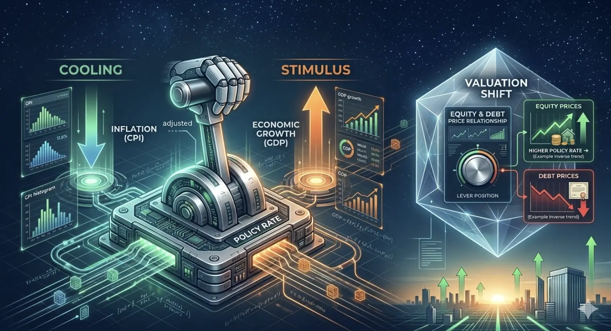

Interest Rates: The Gravity of Financial Markets
Legal Disclaimer & Disclosure
This content is strictly for educational purposes. I am not a SEBI-registered Investment Adviser (RIA) or Research Analyst (RA). Nothing posted here should be construed as an offer to buy/sell or a recommendation of any security.

1. The Equity Market (Stocks)
Interest rates have a multi-layered impact on stocks, affecting both company fundamentals and investor psychology:
- Discounted Cash Flow (DCF) Valuations: Analysts value companies by predicting future earnings and "discounting" them to today's value. Higher rates increase the discount rate, making future earnings worth significantly less today.
- The Cost of Debt: Higher rates increase interest payments for companies carrying debt, directly reducing net profit margins.
- Sector Sensitivity:
- Growth/Tech Stocks: Hit hardest as their value is tied to earnings far in the future.
- Financials/Banks: Often benefit from rising rates by increasing the spread between deposit and loan rates.
2. The Bond Market
The relationship between interest rates and bond prices is mathematically inverse and absolute.
- Price vs. Yield: When rates rise, existing bonds with lower rates become less attractive. Their market price must drop until their yield matches the new market rate.
- Duration Risk: Long-term bonds are much more sensitive to rate changes than short-term bonds.
3. The Real Estate Market
Real estate is highly rate-sensitive due to its reliance on mortgages and leverage:
- Affordability: Rising mortgage rates increase monthly payments, reducing the pool of eligible buyers and cooling price appreciation.
- Commercial Real Estate: Developers using floating-rate debt may find previous projects unsustainable when rates spike, leading to development slowdowns.
4. Currency
- Currency: Higher interest rates typically attract foreign capital seeking better returns, increasing demand for that currency.
Summary Checklist: Interest Rate Impacts
| Market | When Rates Rise ↑ | When Rates Fall ↓ |
|---|---|---|
| Stocks | Generally Bearish | Generally Bullish |
| Bonds | Prices Fall | Prices Rise |
| Borrowing | More Expensive | Cheaper |
| Currency | Strengthens | Weakens |
| Savings | Better Returns | Poor Returns |
Conclusion
Interest rates are the primary tool used by central banks to control Inflation. By raising rates, they cool off rising prices; by lowering them, they prevent recession. For any investor, understanding the "Rate Cycle" is essential for timing entries and exits across different asset classes.